📖 11/18 漫畫版「聴解・漢字・〜ことができます」
全 12 頁日漫複習（baoyu-comic --art manga --tone warm）。主角ハルト（虛構的語言學校學生）跟ミキ先生一起複習 聽力題型、漢字 休・名・昼・間、名詞＋ができます、辞書形＋ことができます。氣泡文字可能糊掉或有錯字，請一律以圖下日語列為準（▶ 播放／⧉ 複製）。
角色設定（一致性）

ハルト：成人語言學校學生（晚 30 歲、眼鏡、海軍藍外套），虛構角色。
ミキ先生：溫柔的語言學校老師（鼠尾草綠開襟衫、櫻花徽章）。
畫風：日漫 clean ink、柔和上色、日語氣泡＋中文對照。
圖上小錯誤備註（請以圖下日語列為準）： P02 郵筒上的字是亂碼（背景裝飾，不用看）； P04 第 3 格「手伝ってください」應該是ミキ先生說的，泡泡位置有點靠近ハルト；第 1 格電影傳單上的字是亂碼； P06 第 1 格白板畫成「休｜木」，正確拆法是「人＋木」； P07 第 2 格白板只畫了「門」＋太陽，完整的字是「間」（門裡面一個日）； P09 海報上的小字是亂碼（背景裝飾）。 中文框裡的「春斗」是ハルト的漢字寫法之一，只是角色名。
12 頁目錄
P01 聴解テスト
聴解テスト
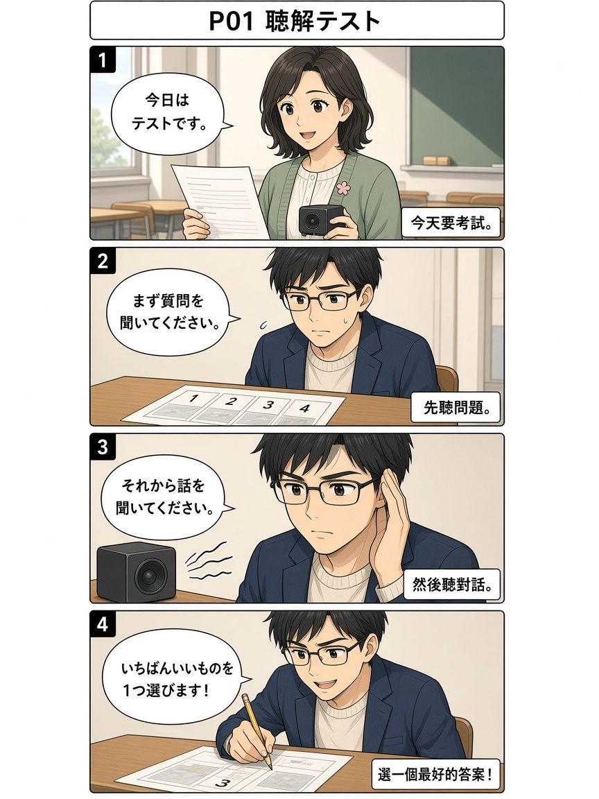
4～8 課的綜合確認測驗，聽力的做法：先聽問題 → 看圖 → 聽對話 → 選最好的一個。
P02 どこにいますか
どこにいますか
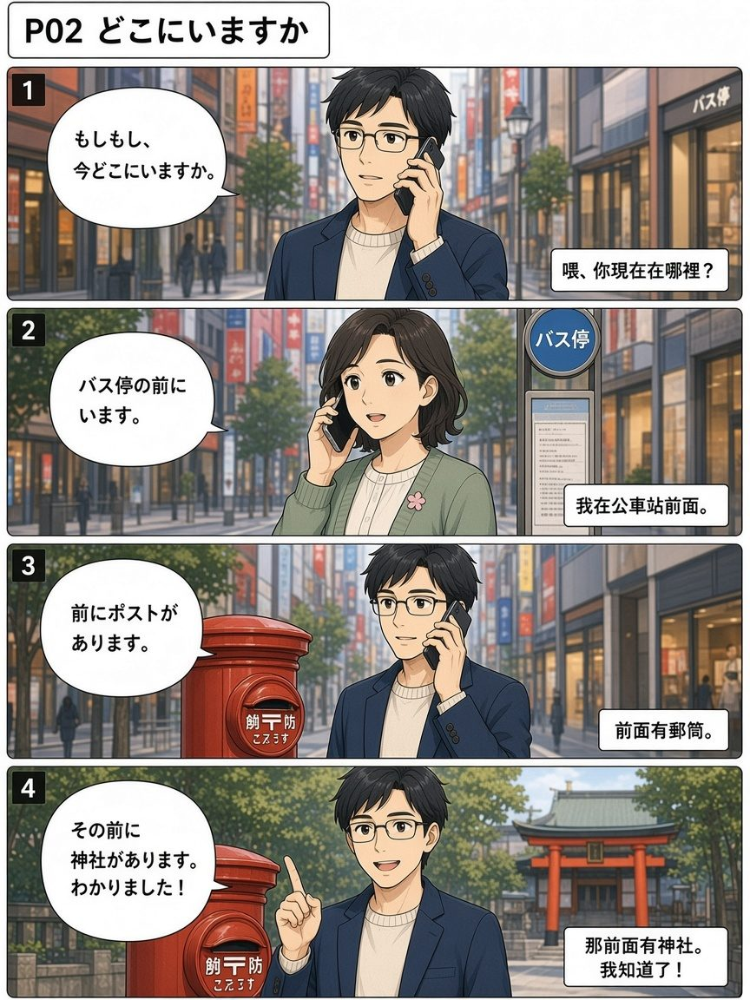
聽力題型①：電話問路，重點是位置詞 前・後ろ・隣。
P03 どうして〜から
どうして〜から
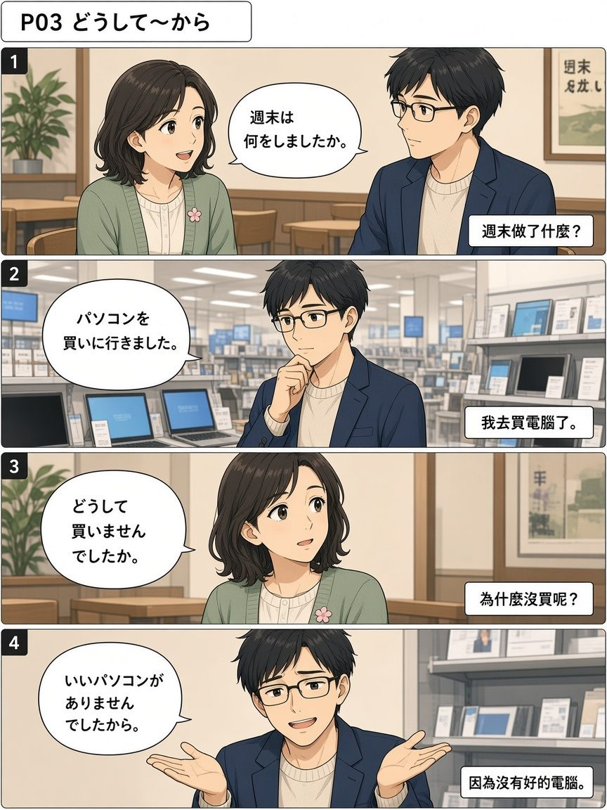
聽力題型②：問「どうして」，答案就藏在「〜から」前面。
P04 何と言いますか
何と言いますか
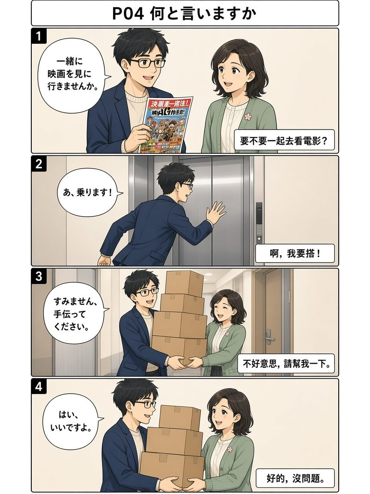
聽力題型③：看圖想「這時候要說什麼」。
P05 もらいました
もらいました
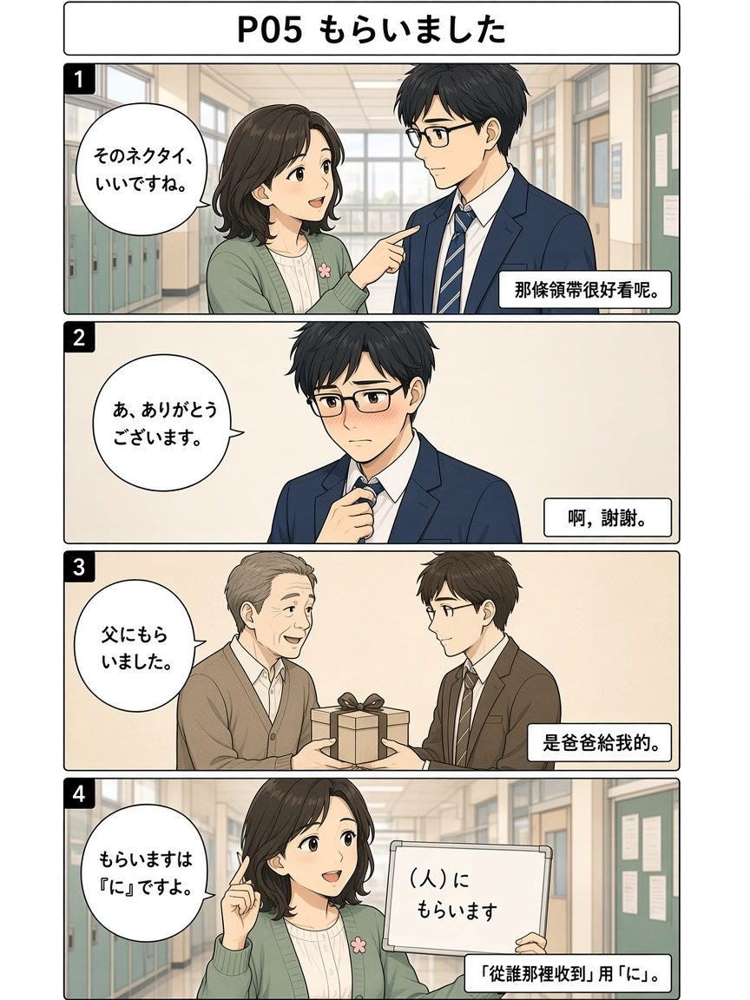
聽力題型④：沒有圖，聽一句話選回答。被稱讚東西時這樣回。
P06 漢字：休・名
漢字：休・名
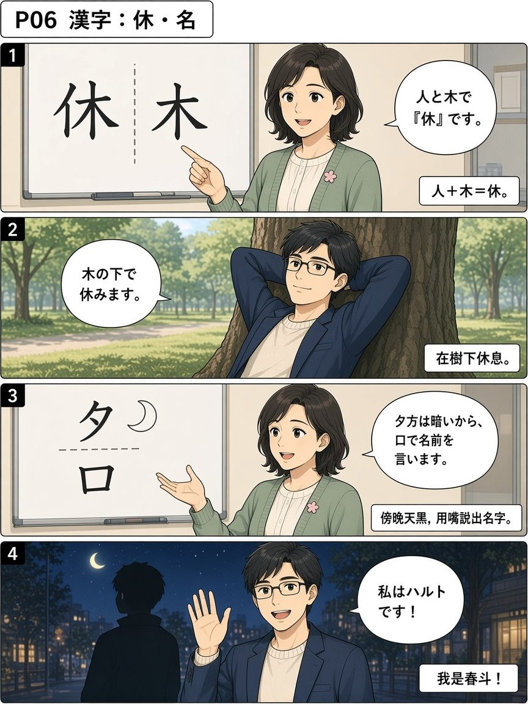
休＝人＋木；名＝夕＋口（傍晚看不清，用嘴說名字）。
P07 漢字：昼・間
漢字：昼・間
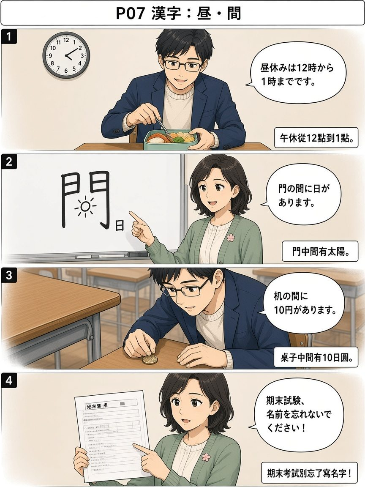
昼休み、時間、机の間；還有老師最重要的提醒：期末考一定要寫名字。
P08 新しい言葉
新しい言葉
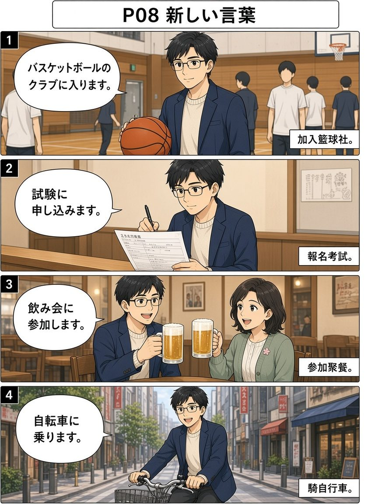
第9課新動詞：入ります／申し込みます／参加します／乗ります，助詞都是「に」。
P09 〜ができます
〜ができます
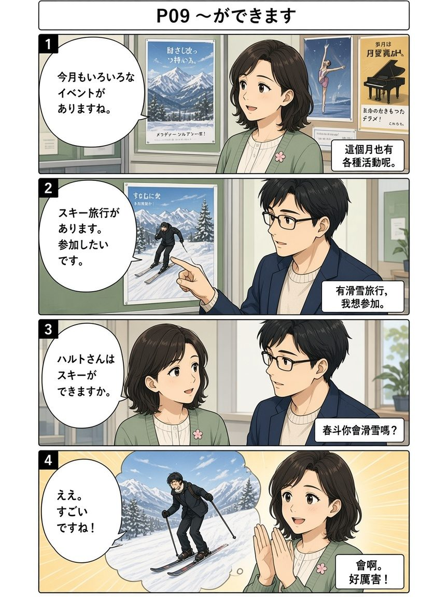
名詞＋が＋できます＝會～。助詞是「が」不是「を」。
P10 辞書形＋ことができます
辞書形＋ことができます
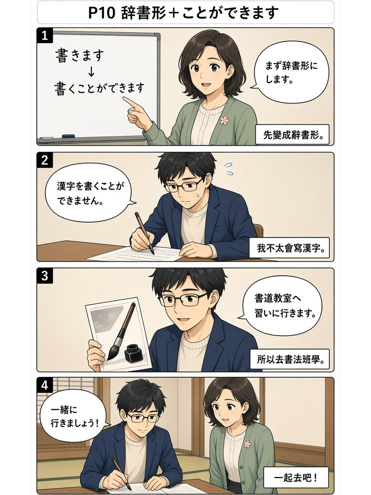
動詞要先變辭書形，再加 ことができます。
P11 あまり〜できません
あまり〜できません
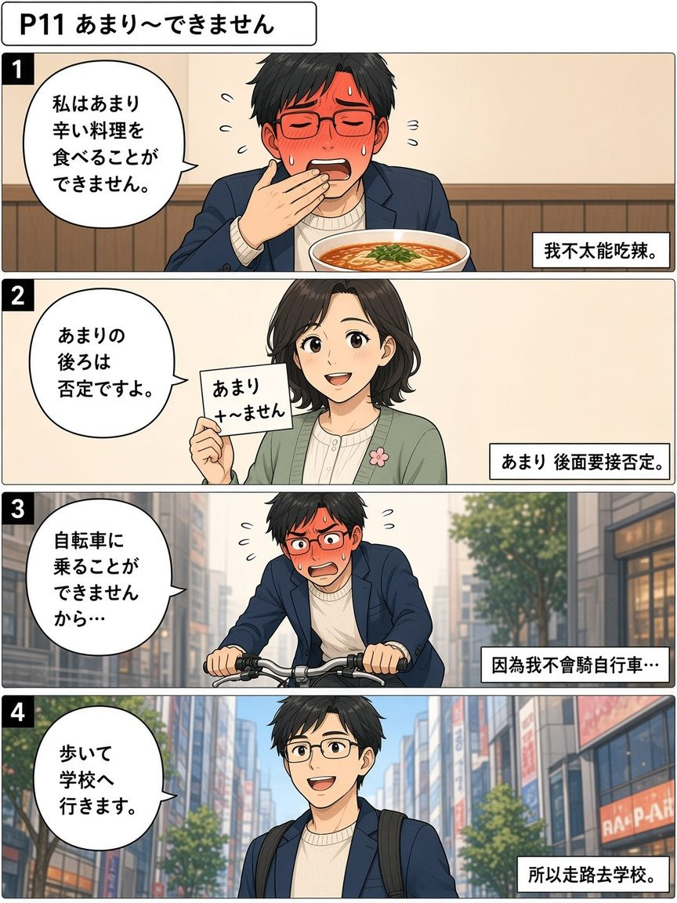
あまり 後面一定接否定；〜から 說理由。
P12 まとめ
まとめ
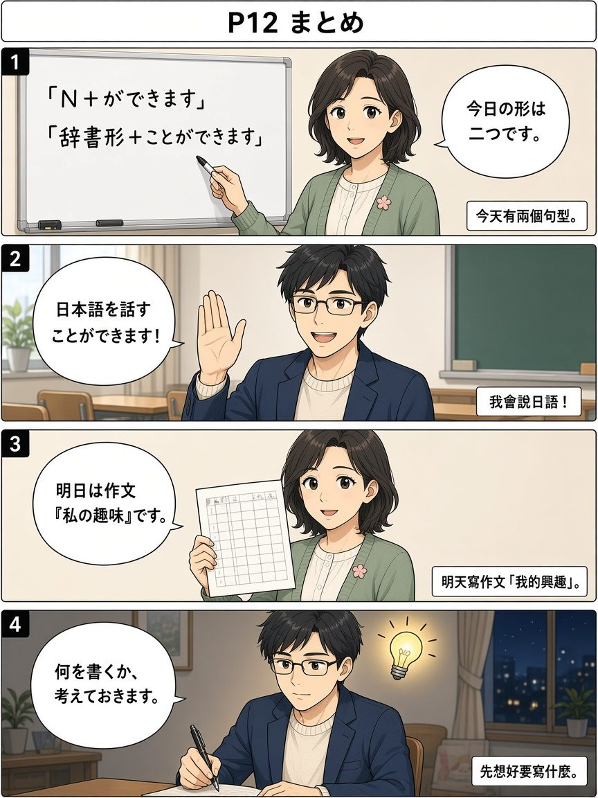
今天兩個句型＋明天課堂作文「私の趣味」（自己寫，先想好內容）。
聽力頁的對話是照課堂測驗「題型」自己改寫的練習句，不是考卷原文，也不含答案。內容僅供個人複習。